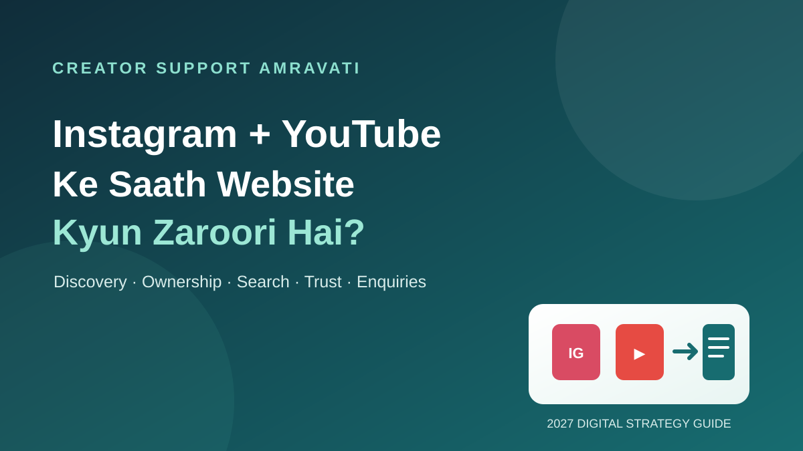

Website Kyun Zaroori Hai Jab Aapke Paas Instagram Aur YouTube Hai? (2027 Guide)
Aaj bahut se creators, educators, freelancers aur business owners ke paas Instagram page ya YouTube channel hai. Jab posts aur videos chal rahe hote hain, toh ek practical sawal aata hai: “Jab Instagram aur YouTube pehle se hain, toh alag website banane ya maintain karne ki kya zaroorat hai?” Social platforms discovery aur community building ke liye useful hain, lekin apni website detailed information, search visibility, direct enquiries aur brand experience ko ek jagah organise kar sakti hai.
2027 mein digital presence ko sirf social feeds tak limit karna zaroori nahi. Website ko social channels ka replacement samajhne ke bajay unke saath kaam karne wala owned hub samjhein. Is guide mein ownership, SEO, credibility, resources, conversion aur monetization ke practical roles dekhenge—bina guaranteed traffic ya income promise ke.
1. Social Media “Rented Land” Hai, Website Aapka “Apna Asset” Hai
“Rented land” ek analogy hai, legal ownership ka exact description nahi. Instagram aur YouTube par aap apna content aur audience relationships build karte hain, lekin platform access, product features, recommendation systems aur account enforcement platform ke rules ke under operate karte hain. Algorithm changes, policy updates, account restrictions ya service changes aapki reach aur workflow ko affect kar sakte hain.
- Social media platforms: Discovery, short-form content, video distribution, community interaction aur audience feedback ke liye useful channels. Lekin reach aur features par aapka complete control nahi hota.
- Aapki website: Domain, information architecture, page layout, published guides, resources aur enquiry journey par aapka zyada direct control hota hai. Hosting, domain renewal, security, backups aur maintenance ki responsibility bhi aapki hoti hai.
2. Website Hone Ke 5 Bade Fayde (Creators Aur Businesses Ke Liye)
1. Google Search Se Long-Term Organic Discovery
Social posts ki visibility feed behaviour aur platform recommendations se influence hoti hai. Iske contrast mein, useful website guides search engines ke through tab bhi discover ho sakte hain jab original social post purana ho chuka ho. Lekin indexing ya ranking guaranteed nahi hoti: page crawlable, useful, technically accessible aur search intent ke liye relevant hona chahiye.
2. Ek Jagah Par Complete Credibility Aur Information
Naya client, student, parent, sponsor ya partner aapke kaam ke baare mein jaanna chahe toh social feed mein purani posts scroll karna mushkil ho sakta hai. Website par About, Services, portfolio, case details, guides, FAQs, contact information aur policies organised form mein mil sakti hain. Claims accurate aur verifiable rakhein.
3. Free Tools, Guides Aur Resource Hub
Website par practical articles, checklists, downloadable resources ya browser-based tools organise kiye ja sakte hain. Ye resources visitors ko repeatable reference dete hain aur related topics ko internal links ke through connect karte hain. Tool genuinely useful, accessible aur maintained hona chahiye.
4. Clear Conversion Aur Inquiry Flow
Social bio ya video description se visitor ko relevant service page, booking information, portfolio ya contact form tak guide kiya ja sakta hai. Page par deliverables, process, location/availability aur next step clear rakhein. Form mein sirf zaroori information maangein aur submit hone ke baad confirmation dikhayein.
5. Additional Monetization Aur Brand Expansion
Quality content aur relevant audience ke saath website par display advertising, apni services ya products, digital resources, sponsorships aur collaborations explore kiye ja sakte hain. Inmein se koi bhi automatic income source nahi hai. Ad networks ki eligibility, policies, traffic quality, audience relevance aur commercial demand matter karte hain. Monetization ko reader experience aur content usefulness ke baad plan karein.
3. Sirf Social Media vs. Social Media + Website Ecosystem
| Aspect | Sirf Instagram / YouTube | Social Media + Website |
|---|---|---|
| Content discovery | Feed, recommendations, subscriptions aur platform search par depend | Social discovery ke saath relevant pages search engines se bhi discover ho sakte hain |
| Brand control | Platform ke interface, rules aur feature changes ke under | Domain, layout, content structure aur enquiry flow par zyada direct control |
| Information depth | Posts, clips, descriptions aur platform-specific formats | Detailed guides, FAQs, services, portfolio aur resources |
| Audience relationship | Platform account aur available communication features se mediated | Website enquiries, opt-in contact pathways aur owned content hub; privacy responsibilities ke saath |
| Conversion path | Bio links, comments, DMs aur platform tools | Dedicated service pages, booking details, forms aur contact options |
| Maintenance | Platform content, account security aur community management | In sab ke saath domain, hosting, backups, security aur site updates |
Dono models ka role alag hai. Social media awareness aur conversation start kar sakta hai; website un logon ko detailed information aur clear next step de sakti hai. Audience behaviour aur available resources ke hisaab se balance choose karein.
4. Website Banate Waqt Kaun Si 4 Galtiyan Nahi Karni Chahiye?
- Sirf “Name Card” Site Bana Kar Chhod Dena: Ek page par sirf naam aur phone number rakhne ke bajay visitor ke real questions answer karein: aap kya karte hain, kis ke liye, process kya hai aur contact kaise karein. Har business ko dozens of pages ki zaroorat nahi; scope audience ke sawalon ke mutabik rakhein.
- Social Aur Website Ko Alag-Alag Rakhna: Social videos ko relevant guides, service pages ya resources se connect karein. Website articles mein related videos embed karein jab woh explanation improve karein.
- Mobile Speed Aur Navigation Ko Ignore Karna: Mobile par menus, buttons, forms, images aur text test karein. Unnecessary scripts aur oversized images page ko slow kar sakte hain. Navigation labels consistent aur descriptive hon.
- Thin Ya Copied Content Dalna: Original explanations, practical examples, accurate details aur meaningful updates publish karein. Sirf keyword variations ke liye repetitive pages na banayein. Search visibility ya AdSense approval ki guarantee koi article format nahi deta.
5. Social Media Aur Website Ko Saath Kaise Use Karein?
- Ek clear audience question choose karein: Audience ke recurring problem ko identify karein.
- Best-fit format mein answer banayein: Short demonstration Reel/Short mein; detailed process blog guide mein; longer explanation YouTube video mein.
- Formats ko naturally connect karein: Short video se relevant detailed guide link karein. Blog mein video tab embed karein jab woh reader ko additional context deta ho.
- Next action clear karein: Reader ko relevant service, tool, booking details ya contact option tak pahunchayein—without forcing unrelated sales CTA.
- Performance review karein: Analytics mein engaged sessions, useful enquiries, search queries aur content performance dekhein. Privacy aur consent settings ko actual tracking setup ke mutabik configure karein.
Aksar Puche Jaane Wale Sawal (FAQs)
1. Kya naye creator ya chhote business ko shuruat mein hi website banani chahiye?
Casual posting ke liye social media se shuruaat ho sakti hai. Lekin brand, business, coaching, service ya content asset grow karna hai, toh clean structured website useful support deti hai. Pehle essential pages se shuruaat karein aur demand ke hisaab se expand karein.
2. Kya website hone se YouTube ya Instagram ki zaroorat khatam ho jaati hai?
Nahi. YouTube aur Instagram discovery, video distribution aur audience interaction mein madad karte hain. Website detailed information, search visibility, resources aur enquiry flow ko support karti hai. Dono complementary channels ho sakte hain.
3. Ek achhi creator ya business website par kaun se sections hone chahiye?
Clear value proposition, About page, services ya offerings, portfolio/examples (jahan relevant ho), helpful guides/resources, contact details aur applicable privacy/policy pages rakhein. Sirf genuine claims aur permission wale testimonials publish karein.
4. Website se search traffic aane mein kitna samay lagta hai?
Iska fixed timeline nahi hai. Search engines ko page discover aur index karne mein samay lag sakta hai; ranking competition, search intent, content usefulness, technical accessibility aur links par depend karti hai. Kuch pages ko weeks ya months lag sakte hain, aur kuch pages rank na bhi karein. Search Console se indexing aur query performance monitor karein.
Useful Tools & Resources
- Free YouTube & Instagram Packaging Kit: Titles, descriptions aur hashtags plan karne ke liye Creator Packaging Kit dekhein.
- Web Development, SEO & Production Services: Website planning aur digital production ke liye CSA Services explore karein.
- Website & Growth Consultation: Creator Support Amravati se sampark karein.
Suggested & Related Articles (Aage Padhein)
Helpful Official Guidelines & References
- Google Search Central: Creating Helpful, Reliable, People-First Content — reader-first content guidance.
- Google AdSense Help: Eligibility Requirements — programme eligibility guidance.
- Google Search Central: SEO Starter Guide — search-friendly website structure.
About the Author
Rajkumar Chavhan ek digital marketing specialist (8+ years experience) aur Creator Support Amravati (CSA) ke founder hain. Woh web development, SEO, content strategy, YouTube & social media packaging aur studio video production ke zariye creators, educators aur businesses ko unki digital presence grow karne mein madad karte hain.
- Website: creatorsupportamravati.in
- Studio & Office: Vyanktesh Complex, Shop No. F-101, Mahendra Colony, Naredi Nagar Road, Amravati, Maharashtra 444604, India
Editorial Disclosure: Yeh guide educational aur informational purpose ke liye taiyar ki gayi hai. Search rankings, website traffic, AdSense approval aur online income guaranteed nahi hain; results audience, competition, implementation aur platform policies ke hisaab se vary karte hain. Website development, SEO ya production support ke liye Creator Support Amravati se jud sakte hain. Content standards aur corrections ke liye Editorial Policy padhein.